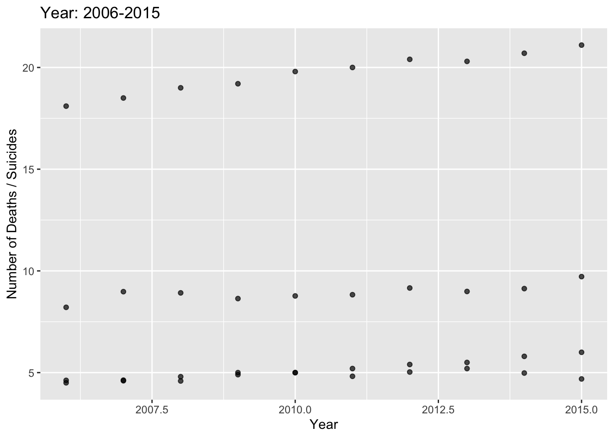
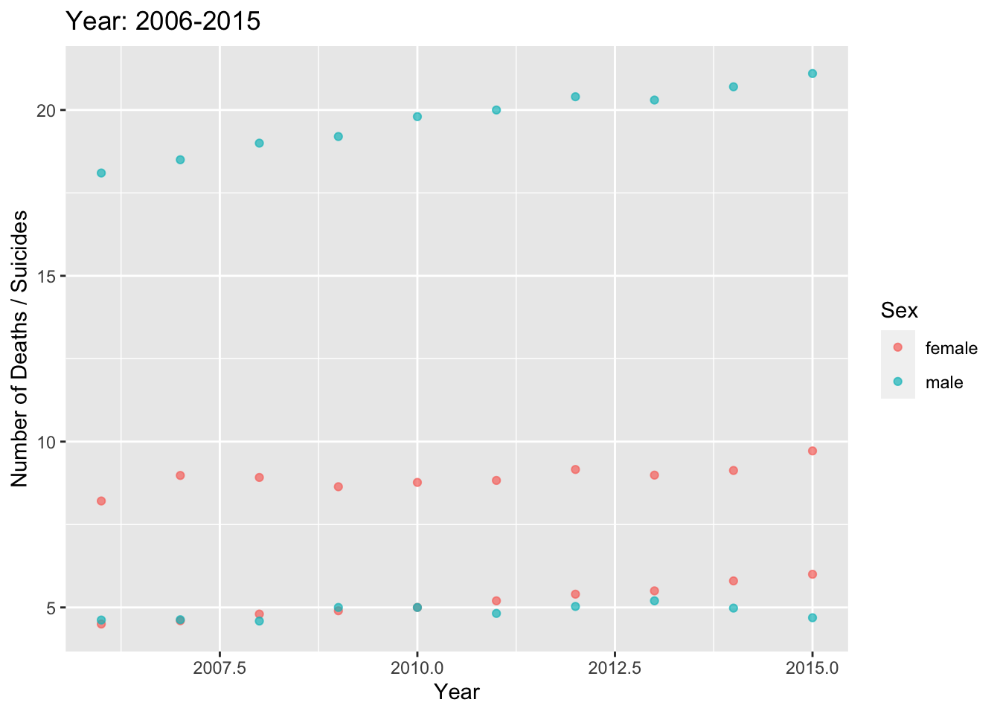
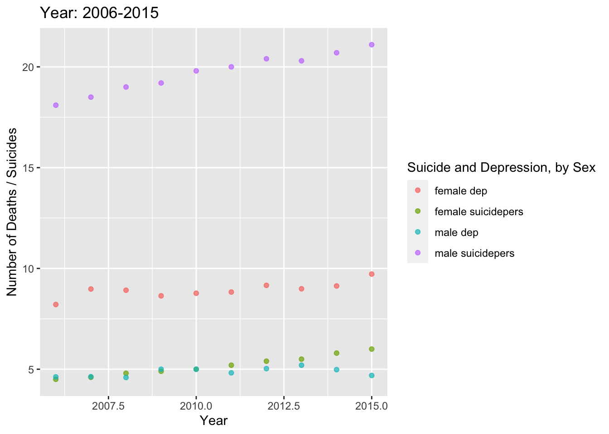
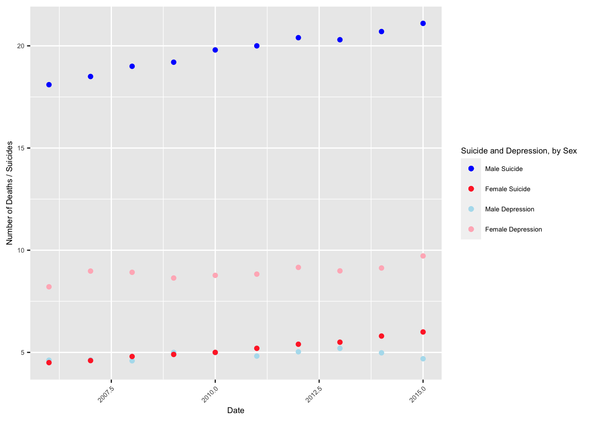
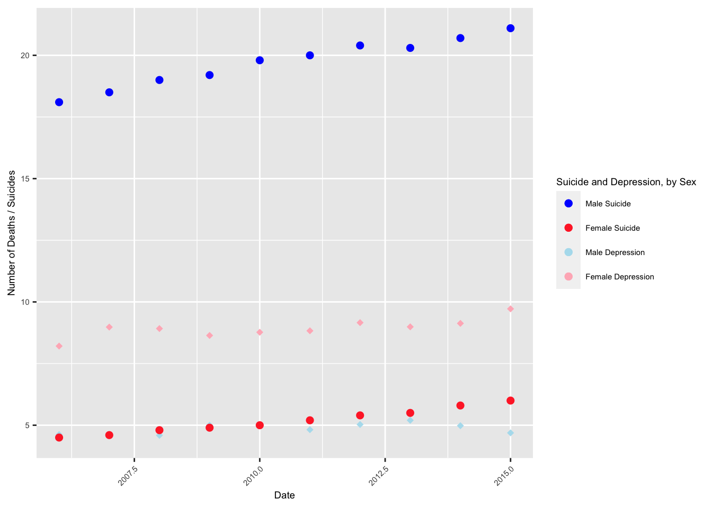

For this project, I wanted to take the concept of disaggregation and apply that visually. Specifically, I want to disaggregate suicide rates and rates of depression by gender. Doing this shows that men and women have dramatically different rates of both suicide and depression. By visualizing these gender differences one is struck by the need to explore additional variables that come into play for men and women, respectively.
Install packages / libraries, and a code that I need for Mac.
r = getOption("repos")
r["CRAN"] = "http://cran.us.r-project.org"
options(repos = r)library(ggplot2)
library(tidyr)library(readr)
SD_Data <- read_csv("~/Documents/GitHub/Portfolio4-USDSG/SDData.csv") ## Rows: 40 Columns: 10
## ── Column specification ────────────────────────────────────────────────────────
## Delimiter: ","
## chr (4): Subject, Sex, SexSubject, SexSubjectValue
## dbl (6): Time, Value, maleS, maleDep, femaleS, femaleDep
##
## ℹ Use `spec()` to retrieve the full column specification for this data.
## ℹ Specify the column types or set `show_col_types = FALSE` to quiet this message.View(SD_Data)ggplot(data = SD_Data, aes(x= Time, y = Value)) +
geom_point(alpha = 0.7, show.legend = FALSE) +
labs(title = 'Year: 2006-2015', x = 'Year', y = 'Number of Deaths / Suicides')
ggplot(data = SD_Data, aes(x= Time, y = Value, color=Sex)) +
geom_point(alpha = 0.7) +
labs(title = 'Year: 2006-2015', x = 'Year', y = 'Number of Deaths / Suicides', color = "Sex")
That is significantly better. R automatically gave us colors that sort of symbolize the underlying construct, or at least provide an intuitive color designation for the variable Sex. What’s missing is that we can not tell the two behavioral variables apart from one another. So we need to assign some form of label to these two M/F variables in a way that still maintains the gender designations.
One way would be to concatenate the data. Let’s create a SexSubject variable. Instead of just plotting sex, which gives us 4 different plotted variables with two colors, we can start to distinguish the four different outcomes.
ggplot(data = SD_Data, aes(x= Time, y = Value, color=SexSubject)) +
geom_point(alpha = 0.7) +
labs(title = 'Year: 2006-2015', x = 'Year', y = 'Number of Deaths / Suicides', color = "Suicide and Depression, by Sex")
This is a step forward because we now clearly identify the four different categories we’re interested in. However, we’ve lost the intuitive aspect of the color system.
colors <- c("Male Suicide" = "blue1", "Female Suicide" = "firebrick1", "Male Depression" = "lightblue2", "Female Depression" = "lightpink")
ggplot(SD_Data, aes(x=Time)) +
geom_point(aes(y = maleS, color = "Male Suicide"), size = 1.5) +
geom_point(aes(y = maleDep, color = "Male Depression"), size = 1.5) +
geom_point(aes(y = femaleS, color = "Female Suicide"), size = 1.5) +
geom_point(aes(y = femaleDep, color = "Female Depression"), size = 1.5) +
labs(
x = "Date",
y = "Number of Deaths / Suicides",
color = "Suicide and Depression, by Sex"
) +
scale_color_manual(values = colors) +
theme(text = element_text(size=7),
axis.text.x = element_text(angle=45, hjust=1))## Warning: Removed 30 rows containing missing values (geom_point).
## Removed 30 rows containing missing values (geom_point).
## Removed 30 rows containing missing values (geom_point).
## Removed 30 rows containing missing values (geom_point).
This is a better visual. However, even using sharply contrasting colors leaves us with room for improvement.
colors <- c("Male Suicide" = "blue1", "Female Suicide" = "firebrick1", "Male Depression" = "lightblue2", "Female Depression" = "lightpink")
ggplot(SD_Data, aes(x=Time)) +
geom_point(aes(y = maleS, color = "Male Suicide"), size = 2) +
geom_point(aes(y = maleDep, color = "Male Depression"), shape = 18, size = 2) +
geom_point(aes(y = femaleS, color = "Female Suicide"), size = 2) +
geom_point(aes(y = femaleDep, color = "Female Depression"), shape = 18, size = 2) +
labs(
x = "Date",
y = "Number of Deaths / Suicides",
color = "Suicide and Depression, by Sex"
) +
scale_color_manual(values = colors) +
theme(text = element_text(size=7),
axis.text.x = element_text(angle=45, hjust=1))## Warning: Removed 30 rows containing missing values (geom_point).
## Removed 30 rows containing missing values (geom_point).
## Removed 30 rows containing missing values (geom_point).
## Removed 30 rows containing missing values (geom_point).
This matches the design that, in my opinion, depicts the categories in a manner that is easily digestible visually, and intuitive. Men have remarkably higher rates of suicide than women, while having similar or even lower rates of depression. The trend lines for men tend to indicate two different trajectories where one segment of the male population grows slightly less depressed while another segment grows more suicidal. That would be a more likely explanation for the divergence of male suicide from male depression. On the other hand, there could be a rather more complicated explanation. The male population may be growing less inclined to report depression while simultaneously becoming more likely to commit suicide. In any event, by visualizing the gender differences and variations in these trends, it becomes clear that broad explanations are insufficient.
In terms of the layout, the legend needs a bit of improvement. I spent way too long trying to get the legend icon shapes to match the shape of the data points in the graph. That will have to wait for another day!